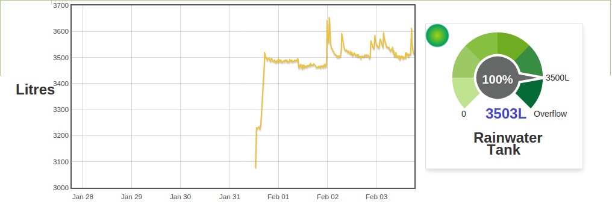

Hi All,
Has anyone tired getting this to work to monitor water tank levels?
I currently use a stand alone system. http://www.smartwatertech.co.nz/
It would be great to get the water level on teh power monitoring screen.
Grant
Archived Forum |
|
Water Tank LevelSubmitted by grantwatson on Fri, 30/01/2015 - 07:15Hi All, Has anyone tired getting this to work to monitor water tank levels? I currently use a stand alone system. http://www.smartwatertech.co.nz/ It would be great to get the water level on teh power monitoring screen. Grant
» |
Re: Water Tank Level
one way to do it is to mount a tab at the very buttom of the tank, connect a hose and run it up the side of the tank... let the hose go pass the top by say 10cm... at the very end you mount a air pressure sensor and seal it...
water will never get to it, but as the tank fill the air pressure goes up, everything must of course be air tight
Re: Water Tank Level
Or ultrasonics.
Re: Water Tank Level
Thanks for your replies,
I'm trying to avoid putting a hole in the bottom of my 50,000 litre tank.
I have investigated the ultrasonic option, but to date have not found a unit that will work up to 3 meters,I'm hoping i never get that low on water.
Re: Water Tank Level
If you follow Bo's suggestion, and when you stop to think, there's no need for the pipe to be outside the tank. It can just as easily stick down inside and you have a hole in the top with the instrumentation on the outside. Just make sure your sensor can handle positive and negative pressures and have a tap, or tap and take-off, so that you can zero it somehow, either by letting/pumping air in or out.
But if I remember correctly, breweries use ultrasonic level detectors, and their tanks can be 3000 barrels (about 4000 Hl), quite a bit bigger that yours.
Re: Water Tank Level
I've had a lot of joy with these:
http://www.anadexlabs.com.au/hydrostatic_level_sensors_and_probes.html
I'm using an AN420-5 which is good for 5m of head. My tank is only 0.8m high, and my AVR ADC is only 10-bits so at first blush you'd think I'd have no chance of getting any accurate readings. In my tank the probe output varies from 4mA (empty) to 6.6mA (full), but I can deal with the full dynamic range of 0-21 mA. Thanks to the "infinite" resolution of the probe (it's analog), and oversampling, my resolution is 1.3uA. That means filling a 10L bucket of water easily shows up on the dials:

Re: Water Tank Level
Awesome thanks for that what have you got it connected to?
Re: Water Tank Level
I've got it connected to my precision energy monitor, but the circuitry is pretty simple. Read up on 4-20mA devices if you've not come across them before. Basically you apply a voltage (12V to 36V in the case of that probe) and the probe limits the current based on how deeply submerged it is. 4mA will flow when the tank is at atmospheric level, 20mA will flow then probe is 5m underwater. The "cable" running down to the probe is actually an electrical cable inside a vented tube so that the probe knows the current atmospheric pressure, so you need to be careful not to kink it, but they're pretty robust.
You then need to convert that current into a voltage, and feed it to your ADC. I use a shunt resistor and an op-amp. A recent lightning strike took out my front end, so I've since added a TVS to both sides, and await the next storm to see if that's sufficient.
Re: Water Tank Level
Thanks for the information, I'll probably have some more questions once i have received the probe.
Re: Water Tank Level
Mmm I'll see if I can find one locally, I was quoted $341 Australian plus shipping.
Re: Water Tank Level
I've had a sniff around and an air pressure sensor, a SMT component that needs power supply etc, from RS-online is under £6 (GBP) (12 AUD?) for a pack of 2 (http://uk.rs-online.com/web/p/pressure-sensors/7884925/). I haven't looked at the data sheet, so I've no idea what else it needs. Alas, I can't see the same one in RS Australia. You really need it to handle both positive and negative pressure (or at least without it causing damage) because of the zeroing problem.
[Edit: I thought I was lying, but no. It's very similar to http://au.rs-online.com/web/p/pressure-sensors/7884921/, but Omron appear to do two versions. The UK one is 2SMPP-03 and the Australian one is 2SMPP-02. Yours is 0 to 37kPA (positive only) ours is -37 kPa to +37 kPa. It's going to need a power supply (from the Arduino?) and op-amp to interface to an Arduino.]
Re: Water Tank Level
I've been testing a pressure node based on a similar device to the one the Robert mentioned, the Honeywell HSC series. The HSC adds an I2C interface, which makes for a nice clean digital connection to an Arduino-type device. No op-amps necessary!
I made a wireless node to detect irrigation system pressure based on this , using the HSC sensor + Moteino (Arduino clone with RFM12B radio attached) which sends data to emonCMS every 20 secs or so.
https://github.com/peakmonitor/Moteino_to_emoncms
Battery life of the node looks to be at least 6 months on 4 AA batteries, based on 2 months data so far.
Disclaimer: I am not an experienced programmer, so the code above is a copy-and-paste project. However it does work and appears to give accurate, repeatable results!